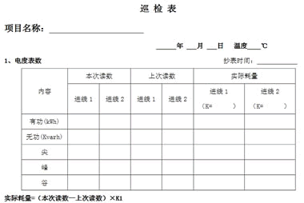
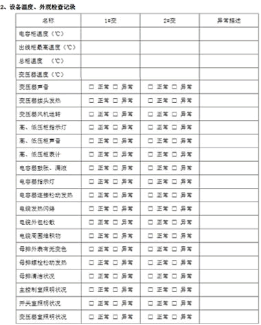
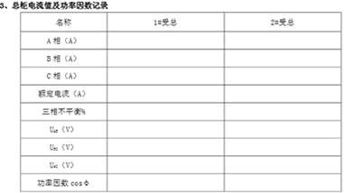
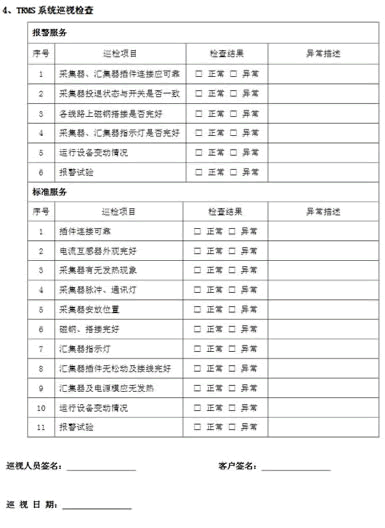
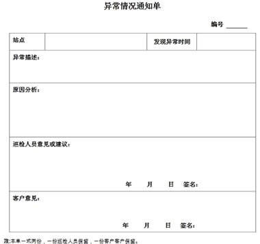

TRMS系统巡检工作服务规范
巡检规范
1. 巡检要求
- 巡检人员应按公司要求着工作服，绝缘鞋。
- 巡检人员应按照合同要求的时间进行巡检。
- 巡检途中严格遵守道路交通法规。
- 每次巡视时需提前通知甲方工作人员，在征得同意后方可进入配电房进行巡检工作，并按规定履行登记手续。
- 巡检人员在巡视时应按规定巡视路线进行巡视。
- 按巡检表单的内容进行逐项填写，在相应结果的方框内打沟。有异常情况时在异常描述栏内进行描述，并开具《异常情况通知单》由甲方工作负责人签字确认。
- 巡检人员每季度一次与客户工程部经理沟通，汇报巡检工作情况及了解甲方的需求。
- 巡检按巡回检查制度执行，工作认真仔细，及时发现异常和缺陷，及时汇报调度和上级，杜绝事故发生。
2. 配电房巡检规范
记录真实巡检时间及变电站环境温度，巡检内容包括：基本巡查、安全工器具巡查、消防器材巡查、缺陷报告。
基本巡查项目：
- 记录电度数（有功、无功、尖、峰、谷的实际耗量）。
- 用红外线测温仪测量受总柜、电容柜、出线柜最高温度并做好记录。
- 记录变压器的温度（取三相最高温度）。
- 高压柜巡视项目包括：检查高压柜带电指示灯、电压表、电流表指示是否正常。
- 变压器巡视项目包括：声音、接头发热、风机运转是否正常；
- 低压柜巡视项目包括：声音、表计、指示灯、接头发热、母排外表有无变色、松动发热、清洁状况；
- 电容柜：外观检查项目包括：电容器鼓胀、漏液；指示灯是否正常；接头有无松动发热。
- 电缆巡视项目包括：有无发热闪络、外包松散、电缆周围堆积物；
- 照明状况巡视项目包括：主控室、开关室、变压器室照明是否正常；
- 直流设备宣誓项目包括：蓄电池外观、电压、报警系统是否正常；
- 检查受总开关的电压表三相平衡情况，记录电压、电流表读数。
安全工器具巡检
安全工器具应每月进行一次检查，检查项目有外观、合格证、有效期等。
消防器材巡检
消防器材每月进行一次检查，检查项目有外观、有效期、气压（压力表指针指在绿色范围时，表明瓶内压力正常；压力表指针指在红色范围时，表明瓶内压力不够，属异常；压力表指针指在黄色范围时，表明瓶内压力过大，属异常）。
缺陷报告
一旦发现异常即把缺陷内容填入巡查表中的异常描述栏并以书面形式（异常情况通知单-附件二）通知甲方工作负责人。
3. TRMS系统巡检规范
安装变电站失电报警装置的站点
- 按照标准巡检要求填写现场电量数据、受总数据、出线柜、进线柜、电容柜温度以及其他的巡检项目。
- 检查现场采集器插件应无松动、脱落现象。
- 检查各个电流互感器外观应完好，无破损。KH30电流互感器二次线路无短路。
- 检查采集器有无发热现象，如有严重发热现象，需要及时更换。
- 检查通讯指示灯、有功、无功脉冲指示灯是否与线路负荷一致，线路负载较大时，脉冲指示灯应闪烁频率较高。
- 检查采集器安放位置应可靠。
- 检查磁钢无破损，搭接完好无松动现象。
- 检查汇集器工作电源指示灯，GPRS信号指示灯应正常。
- 检查汇集器RS485通讯、与工作电源接线完好，无松动现象，汇集器、电源模块应无发热现象。
- 检查现场设备有无变更，确认备用线路没有启用，确认无新增线路，发现现场有新增线路时，应及时向站长汇报，统一处理。
- 巡检时现场做断相报警试验，在任意运行的线路上将采集电压信号磁钢拉掉一相或三相，10秒钟左右恢复接线，该站点巡检人员在1分钟左右，应收到服务器发出的报警信息，巡检人员收到信息后应及时与现场线路名称核对，检查报警信息是否正确，如果做报警试验时，没有收到报警信息，应及时与新能量监客服联系，及时查明原因。
附件一


结果评估：1、设备最高温度全部在60℃以下。 (变压器温度可放宽至90℃) 判定为正常。
2、电流（≥100A）不超出额定值且三相不平衡度在0--20%，判定为正常 。
三相不平衡度%=（电流最大值--电流最小值）/ 电流最大值×100%

附件二